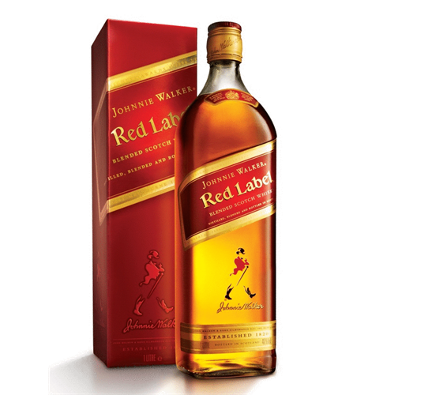

Whiskey Johnnie Walker Red Label


R$115,78
R$104,90
Johnnie Walker Red Label é o blend pioneiro, que lançou o nosso whisky
no mundo. Muito versátil e universalmente atraente, com sabor intenso e vigoroso
que se destaca mesmo quando misturado. Johnnie Walker Red Label
é o whisky escocês mais vendido no mundo. Perfeito para festas
e encontros entre amigos, tanto em casa como fora.